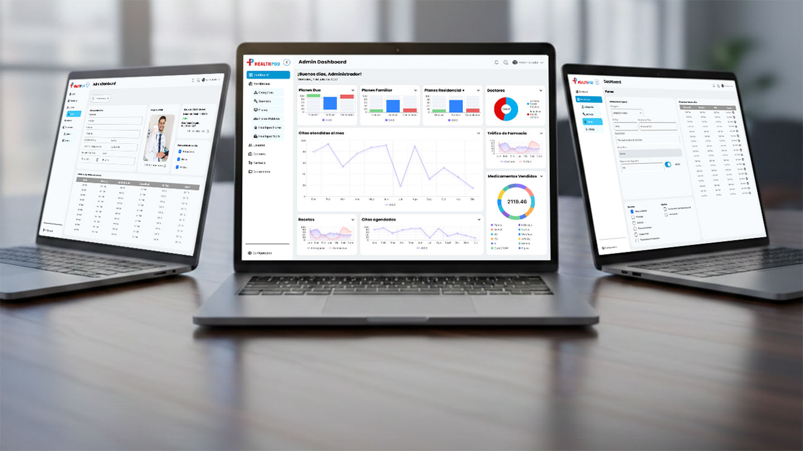
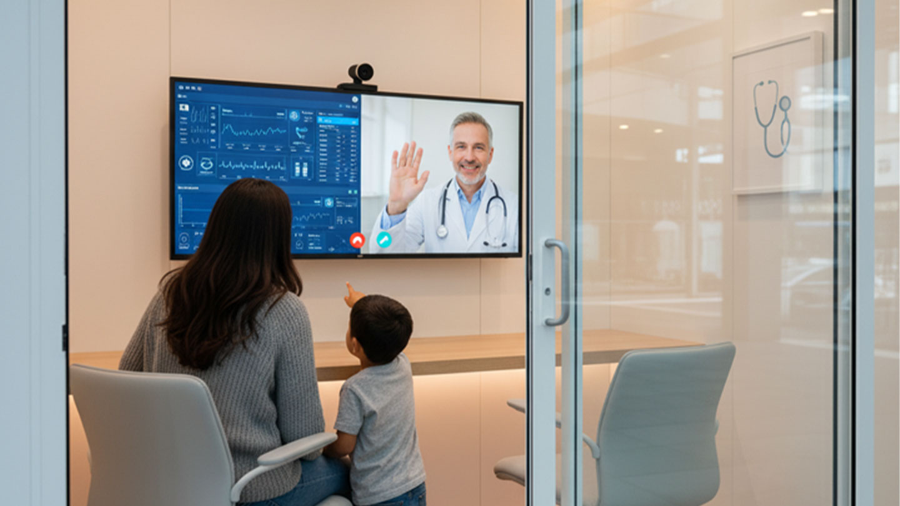
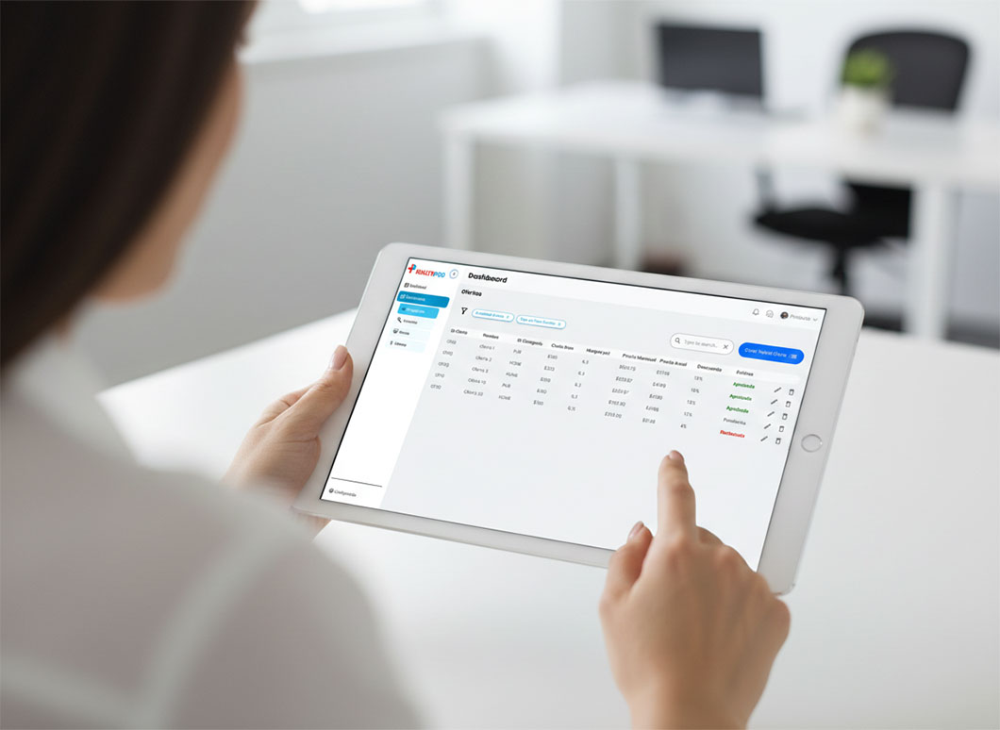
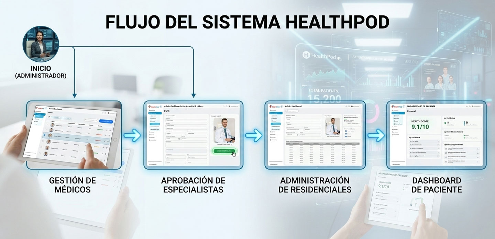
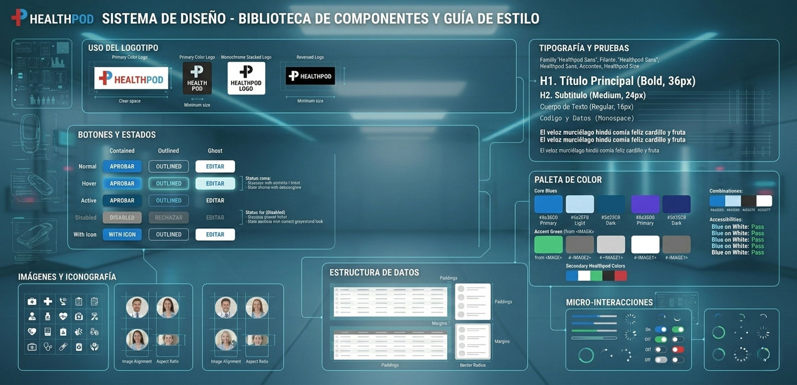
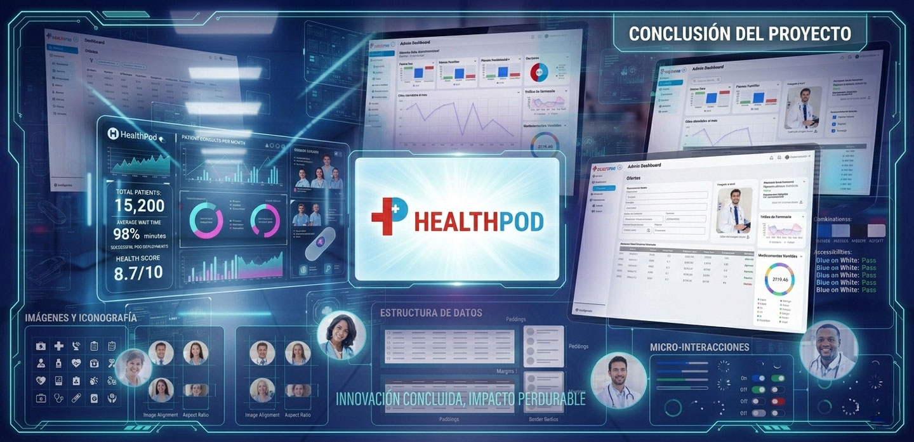

HealthPod — Plataforma de gestión médica y administración inteligente
HealthPod surge como una solución digital para acercar servicios médicos básicos a comunidades residenciales y corporativas, facilitando la gestión tanto para pacientes como para especialistas y administradores.
El reto no consistía únicamente en diseñar una interfaz atractiva, sino en construir una arquitectura sólida capaz de soportar múltiples roles, permisos y operaciones críticas dentro de un entorno sensible como la salud digital.
UI/UX Designer
Arquitectura + UI System
2025- 2026

Contexto
HealthPod es una plataforma digital diseñada para administrar servicios médicos instalados dentro de residenciales y oficinas corporativas mediante pods físicos equipados para atención médica.
El sistema debía permitir la gestión integral de médicos, pacientes, especialistas, cotizaciones personalizadas y monitoreo de fallas en los pods, todo bajo una estructura jerárquica de permisos.

El problema
El proyecto inició desde cero, sin una base estructural previa. Era necesario:
- ✔ Definir la arquitectura del producto.
- ✔ Diseñar flujos claros para distintos tipos de usuario.
- ✔ Generar confianza en un entorno médico digital.
- ✔ Crear una base escalable para futuras funcionalidades.
El mayor desafío fue estructurar una experiencia clara y jerárquica que pudiera adaptarse a distintos niveles de complejidad operativa sin generar sobrecarga cognitiva.
Objetivos
- ✔ Diseñar una experiencia intuitiva para pacientes con mínima fricción tecnológica.
- ✔ Construir dashboards operativos claros para especialistas.
- ✔ Desarrollar un módulo administrativo escalable y modular.
- ✔ Establecer un sistema visual consistente y profesional.
- ✔ Alinear decisiones de diseño con viabilidad técnica bajo metodología Agile.
Mi rol
Participé como UI/UX Designer en:
- ✔ Definición de arquitectura de información.
- ✔ Diseño de user flows para pacientes, especialistas y administradores.
- ✔ Diseño de dashboards complejos con distintos niveles de permisos.
- ✔ Creación de sistema de componentes reutilizables.
- ✔ Documentación para handoff con desarrollo.
- ✔ Participación en refinamientos y validación técnica.
Mi participación abarcó tanto arquitectura como diseño visual y estructural.
Arquitectura del producto
La plataforma fue diseñada para soportar tres grandes tipos de usuario:
- 1.- Pacientes
- 2.- Especialistas (médicos, psicólogos, nutricionistas).
- 3.- Administradores (Super Admin, Admin General y Admin de Residencial/Oficina).
Desde el inicio, la arquitectura consideró escalabilidad y separación clara de responsabilidades para evitar cruces funcionales innecesarios.
User Flows
Paciente — Registro y agendamiento
Se diseñó un flujo simplificado que permitiera:
- ✔ Registro rápido
- ✔ Selección clara de especialidad
- ✔ Visualización de disponibilidad
- ✔ Confirmación sencilla de cita
La prioridad fue reducir pasos y evitar fricción en el proceso de agendamiento, especialmente considerando usuarios con distintos niveles de alfabetización digital.
Especialista — Gestión de consultas
El flujo para especialistas se centró en:
- ✔ Gestión de agenda
- ✔ Acceso rápido a historial del paciente
- ✔ Inicio fluido de videollamada
- ✔ Estados claros de consulta
Se buscó claridad operativa y reducción de carga cognitiva durante sesiones activas.
Deep Dive — Admin dashboard
El módulo administrativo fue la sección más compleja del producto.
El administrador podía:
- ✔ Gestionar médicos y especialistas
- ✔ Aprobar nuevos registros profesionales
- ✔ Administrar pacientes
- ✔ Configurar servicios
- ✔ Supervisar residenciales y corporativos
- ✔ Aprobar cotizaciones personalizadas
- ✔ Revisar fallas en pods
- ✔ Monitorear métricas operativas
El reto
Organizar múltiples responsabilidades en una sola interfaz sin generar saturación visual ni confusión jerárquica.
Arquitectura y jerarquía
La estructura del dashboard se organizó en tres ejes principales:
- ✔ Gestión de usuarios
- ✔ Gestión operativa
- ✔ Supervisión y métricas
Se implementó navegación lateral persistente con agrupación lógica por frecuencia de uso y criticidad.
Las acciones sensibles (aprobaciones, suspensiones, configuraciones) fueron diseñadas con confirmaciones explícitas y estados diferenciados.
Estructura de roles y permisos
Super Admin
- Control total del sistema
- Gestión global de residenciales
- Configuración de servicios
Admin
- Gestión de médicos y pacientes
- Aprobación de especialistas
- Visualización de métricas
Admin Residencial / Corporativo
- Gestión local por ubicación
- Supervisión de fallas en pods
- Aprobación de cotizaciones
Dashboard administrativo
El módulo más complejo del sistema. Su diseño requirió estructurar visualmente múltiples áreas de gestión dentro de una interfaz clara, jerárquica y fácil de navegar.

Sistema de métricas y KPIs
Se propuso un sistema de visualización de métricas en las páginas iniciales de cada sección, incluyendo:
- Consultas activas
- Especialistas aprobados vs pendientes
- Pods con fallas
- Residenciales activos
- Planes corporativos en proceso
Durante el desarrollo, algunas visualizaciones fueron simplificadas por viabilidad técnica, priorizando funcionalidades esenciales.
Este proceso reforzó la importancia de balancear ambición de diseño con factibilidad técnica.
Flujos principales
Se desarrollaron flujos Hi-Fi completos en Figma para:
- Gestión de médicos
- Aprobación de especialistas
- Administración de residenciales

Sistema visual y componentes (Design System)
Se construyó un sistema modular con:
- Componentes reutilizables
- Tablas estandarizadas
- Sistema de estados coherente
- Patrones consistentes de acción primaria/secundaria
- Paleta enfocada en salud y tecnología
El objetivo fue asegurar escalabilidad y consistencia a largo plazo.

Resultado
Se logró una estructura administrativa clara, jerárquica y escalable, capaz de adaptarse a distintos niveles de permisos y necesidades operativas. El dashboard permite control integral sin sacrificar claridad visual.
Colaboración y metodología
El proyecto se desarrolló bajo metodología Agile.
Participé activamente en:
- ✔ Refinamiento de historias de usuario
- ✔ Validación de factibilidad con desarrollo
- ✔ Ajustes iterativos
- ✔ Documentación para handoff
La colaboración constante permitió mantener alineación entre diseño, negocio y desarrollo.
Impacto
Aunque el enfoque principal fue estructural, el proyecto permitió:
- ✔ Establecer una base sólida y escalable
- ✔ Unificar criterios visuales y funcionales
- ✔ Clarificar jerarquías operativas
- ✔ Facilitar futuras expansiones del sistema
- ✔ Mejorar coherencia entre módulos
Aprendizaje
- ✔ Diseñar para múltiples roles exige claridad arquitectónica desde el inicio
- ✔ La jerarquía visual en dashboards administrativos impacta directamente en eficiencia operativa
- ✔ Las decisiones de priorización técnica son parte integral del diseño de producto
- ✔ La escalabilidad debe diseñarse desde el sistema, no solo desde la interfaz

Conclusión
HealthPod representó un ejercicio integral de diseño de producto, donde el reto no se limitó a la interfaz, sino a la construcción de una arquitectura sólida capaz de soportar múltiples roles, jerarquías operativas y necesidades administrativas en un entorno sensible como el sector salud.
El proceso implicó definir estructuras desde cero, diseñar flujos claros para distintos tipos de usuario, establecer sistemas visuales escalables y colaborar estrechamente bajo metodología Agile con equipos de desarrollo y negocio.
A lo largo del proyecto se consolidaron aprendizajes clave en arquitectura de información, diseño de dashboards complejos, priorización técnica y construcción de sistemas modulares orientados a crecimiento. La experiencia reforzó la importancia de diseñar con visión estructural, considerando no solo la experiencia inmediata del usuario, sino la sostenibilidad del producto a largo plazo.
Profesionalmente, este proyecto fortaleció mi capacidad para abordar productos digitales complejos, tomar decisiones estratégicas alineadas con negocio y desarrollo, y diseñar soluciones que equilibran claridad operativa, escalabilidad y coherencia visual.
HealthPod no solo fue un proyecto de diseño, fue un ejercicio de pensamiento sistémico aplicado a producto digital.